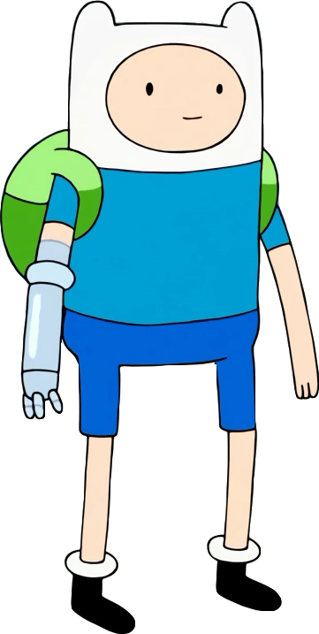
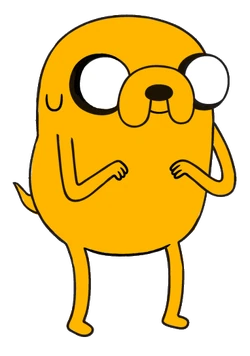
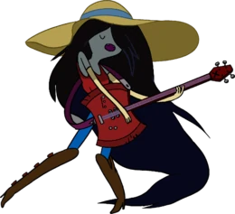
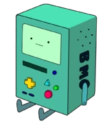
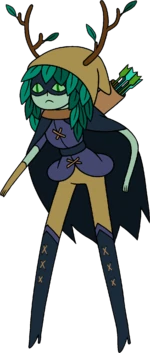

Personagens e suas características
Font: Hora de Aventura Wiki
| Personagens | Carisma | Classe | Raça | Moradia |
|  | 80% | Espadachin | Humano | Casa na Árvore |
|  | 99% | Metamorfo | Alien, Cachorro | Casa na Árvore |
|  | 66% | Metamorfo, Vampiro | Humano, Demónio | Casa da Marceline |
|  | 100% | Sábio | MO | Casa na Árvore |
|  | 30% | Caçador, Mago | Humanóide | Wizard City |